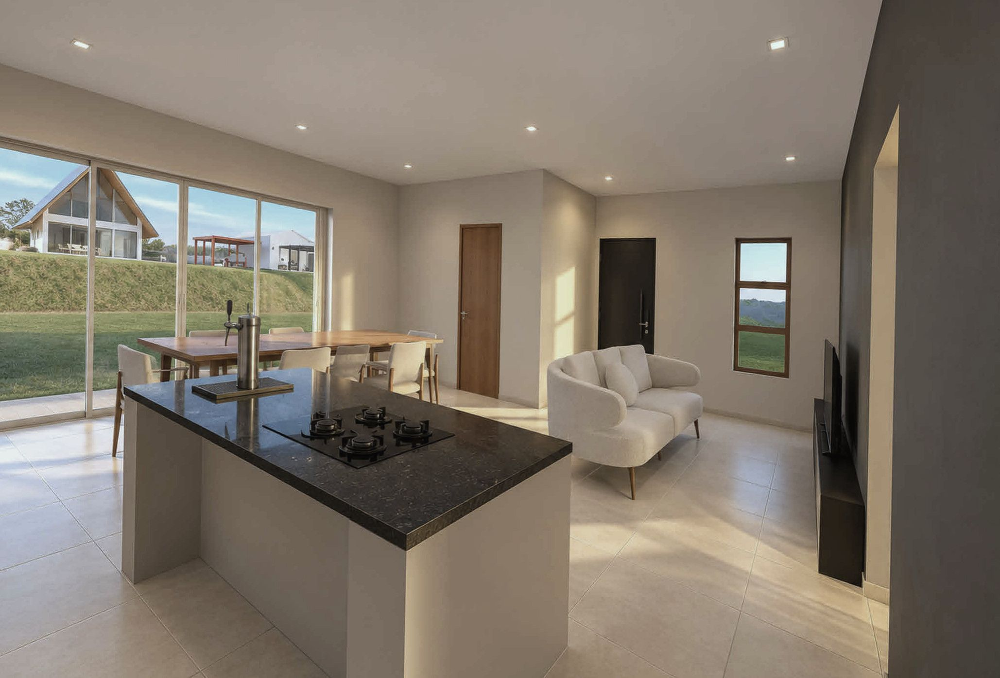

blog / steel frame
Steel frame tem melhor conforto termoacústico? Quem responde é a parede, não o sistema.
Uma parede de steel frame é um conjunto de camadas, e cada camada tem uma função. No som, o ensaio de laboratório passou com folga do mínimo. No calor, o resultado depende do projeto.

Som
Na avaliação técnica oficial do sistema, uma parede de fachada com lã de vidro no miolo, ensaiada em laboratório sem janela, isolou 50 dB. O mínimo exigido na avaliação era de 30 dB.
O número vale para aquela composição. Trocar o isolante, uma placa ou a vedação das juntas muda o resultado.
Calor
O desempenho térmico não vem pronto com o aço. Isolante, cor da fachada, sombreamento e ventilação decidem se a casa atende ao clima em que está.
O que isso quer dizer
Steel frame não é mais nem menos confortável por ser steel frame. Conforto se especifica camada por camada, no projeto, para o terreno e o uso daquela casa.
Fontes
- Documento de Avaliação Técnica nº 14, SINAT, com avaliação do IPT